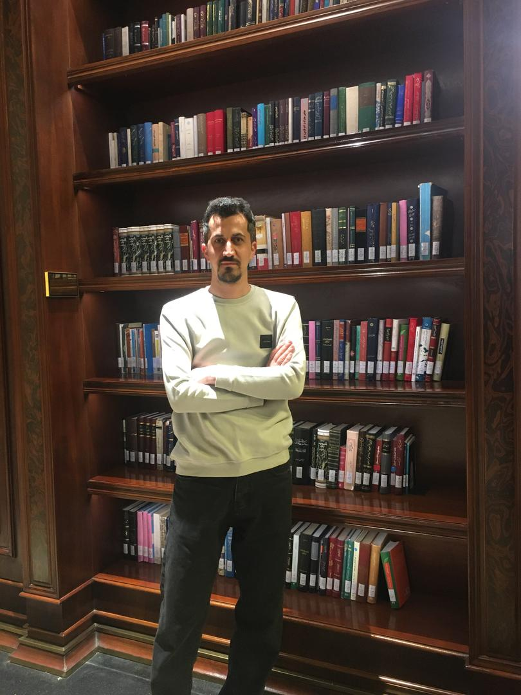

Fault-tolerant control
Observer- and learning-based methods for nonlinear and time-delay systems.
CONTROL ENGINEERING · ROBOTICS · INTELLIGENT SYSTEMS
I am Farshad Rahimi, a control and robotics researcher working on fault-tolerant control, distributed estimation, multi-agent systems, and learning-based methods.

Control & Robotics Researcher
ABOUT
I hold an M.Sc. in Electrical Engineering—Control Systems from Sahand University of Technology and a B.Sc. in Robotics Engineering from Hamedan University of Technology.
My work connects rigorous control theory with practical simulation and implementation. I develop methods for nonlinear systems, networked agents, fault estimation, and autonomous robots using MATLAB, Julia, and ROS.
Observer- and learning-based methods for nonlinear and time-delay systems.
Distributed estimation, optimization, and coordination over communication networks.
Reproducible MATLAB, Julia, ROS, and Webots experiments for autonomous systems.